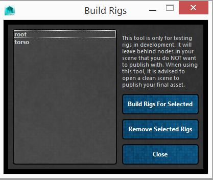

ART_DebugRigs¶
Author: Jeremy Ernst
-
class
Interfaces.ART_DebugRigs.ART_DebugRigs(mainUI)[source]¶ This class is used in developing rigs for modules and quickly testing them without having to go through the entire build/publish process.
-
__init__(mainUI)[source]¶ Instantiate the class, getting the QSettings, and building the interface.
Parameters: mainUI – The instance of the Rig Creator UI from which this class was called.
-
buildRigs()[source]¶ Builds the rigs for the selected module by calling on that module’s buildRig function.
-